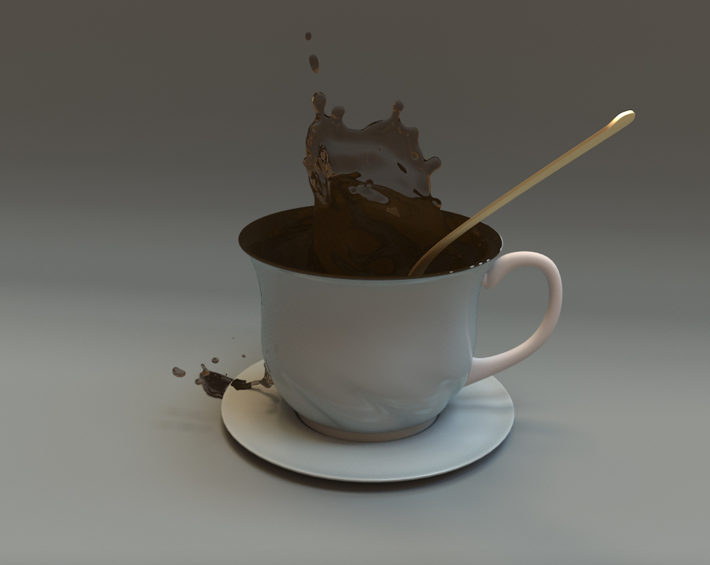
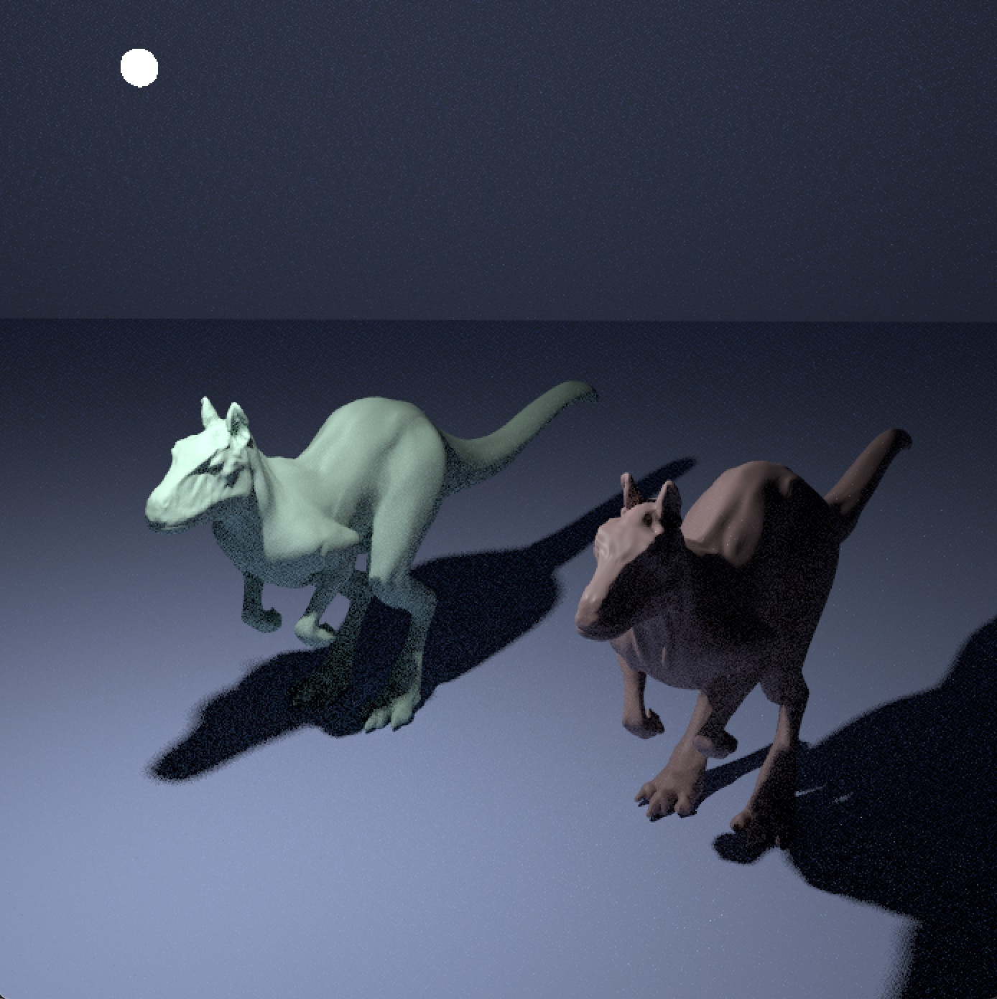

CS 184 Milestone Deliverables - Spring 2022
Team 16 - Bubblz
Team members: Sravya Basvapatri, Tina Li, Simon Tsui, Daniel Won
Website Write Up
What we’ve have accomplished
In the past few weeks, we’ve worked on researching methods to render bubbles– for a while, we weren’t sure what platform/language to use, so we leaned heavily into the initial feedback we were given and guidance from Prof Ng during office hours. After messing around with Mitsuba2 and PBRT, we decided that PRBT would be the best choice to move forward with because it is well documented. We have since been able to render example scenes, through which we have learned about what inputs are required to render different types of materials. PBRT has extensive documentation so we have been doing a lot of research on how to get our render to work, as well as researching how iridescence is implemented.
Preliminary results

Reflect on progress relative to our plan
Looking back at it, our original plan might have been a little ambitious. By this week we had originally planned to have had all the rendering for soap bubbles done and be working on the implementation of bubble movement since we thought we could easily build off our project 3 and 4 code. What we did not foresee was the amount of time it was going to take to find a new platform/renderer. In our proposal feedback Mark mentioned possibly using mitsuba 2 as a renderer since it already has spectral rendering capabilities. However, we spent a lot of time trying to use this platform, but then came to the conclusion that the amount of technical difficulties that we ran into setting up the renderer probably outweighed the abilities of the renderer. So, we switched over to PBRT. Originally, we intended by the milestone to already have a rendering of the soap bubbles and would be moving onto the particle motion and animation parts, but due to the difficulties we had with finding a renderer our progress was stalled a bit.
Updates to our work plan
Since the set up for this project took much longer than expected, we have amended the last 2 weeks of our schedule to:
SCHEDULE
- Task: Coming up with a BRDF implementation that allows us to render a sphere with a bubble’s appearance. If transparency of a thin-membrane surface ends up being challenging, first focus on rendering iridescence (wavelength specific path tracing / diffraction), then move onto combining reflection, transparency, and diffraction.
- Deliverable: Images against a black or solid color background that demonstrate the iridescent and transparent properties of the bubbles surface.
- Goal: Getting started on bubble movement/animation
- Task: Research and start working on a framework that would inform bubbles moving through air.
- Deliverable: Pseudocode and framework organization (i.e. function headers and descriptions) for how to implement movement of bubbles through air.
- Goal: Implementation of movement of bubbles
- Task: Defining the bubbles as objects in our program representative of bubbles in the real world. Will need to handle the following aspects of movement: object collision, external forces (like gravity and wind), and how the lighting of the bubble will change as it travels across the image.
- Deliverable: Video (either real-time rendering or pre-rendered) of some form of realistic movement of the bubbles. The goal is that the bubbles are rendered according to their realistic appearance, but if we encounter challenges in that piece, at least render solid-color or “glass” appearing bubbles.
- Final Presentation: May 5th
- Stretch Goal: Refine bubble collisions, shapes, and pops
- Task: Compare our bubble collision implementations to real-life bubble collisions and research / implement ways to speed up and improve our rendering of various bubble shapes and bubbles popping.
- Deliverable: A video scene where bubbles collide and break away from each other, or combine into a single bubble. Effective rendering of bubbles that are stuck together, that pop, or maintain non-spherical shapes.
- Goal: Final deliverables completed
- Subtask: Compile all of our working documentation/ add more in order to complete our final report webpage, film and complete our final project video, and have each member fill out their peer review form.
- Deliverable: The final report and video!
Milestone Video
184 Bubblz Milestone Video (slide walkthrough)
Presentation Slides
184 Final Project Milestone Slides